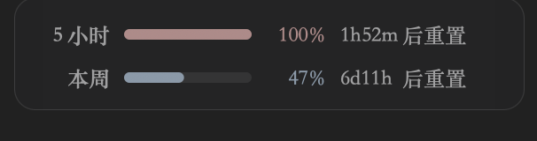

Codex has two rate-limit windows, one measured over five hours and one over a week. It does not tell you how much is left. You usually find out when it runs out, halfway through something.
So I built a small panel that sits in the bottom-right corner of the Codex window. Two lines: how much of each window is gone, and how long until it resets. Switch to another app and it disappears.
The thing itself took an afternoon. What this page is actually about is the other half: how to ask for the number, and the walls I walked into on the way. The code is open source, link at the bottom.
Where the number comes from
This is the one part you cannot find elsewhere, and the part worth taking away on its own.
The Codex desktop app ships a small program alongside it. Think of it as an enquiry desk that lives on your machine and already knows who is signed in. You do not show it any credentials. You ask it how much of your quota is left, and it answers.
That matters. The other route, the one that looks easier, is to open the file where Codex keeps your login and parse the token out of it yourself. I did not take that route and I would not recommend it: the moment you touch someone else's credentials you are responsible for them, and the day that file format changes your tool is dead. Going through the enquiry desk means the credentials never pass through your hands at all.
The conversation is three sentences, one per line:
initialize with a number attached, then wait for the reply carrying the same number.initialized. No number, and nothing replies. Skip it and the conversation stops there.account/rateLimits/read. Both windows come back together.The answer holds two groups, one per window. Here is a trap: they are named primary and secondary, which sounds like importance but is only position. What actually identifies a window is the field saying how many minutes long it is. 300 is the five-hour window, 10080 is the week. Go by the names and the day they swap order, you are showing the wrong one.
I pulled that part out into a script of under forty lines. No dependencies. Run it and your own limits print in the terminal:
python3 examples/read_rate_limits.py 5-hour ████████ 100.0% resets in 1h42m weekly ████░░░░ 47.0% resets in 6d11h
If all you wanted was the number, you can stop here. Everything below is the shell I wrapped around it.
One thing you cannot design around
I wanted it to launch when Codex launches. That would be the clean version. It cannot be done, for a simple reason: if the program is not running, nothing can tell it that Codex just opened. To watch for that, something has to be awake already.
So instead it sits in the background from login, with no Dock icon and no menu-bar icon. You never see it. The panel appears only when Codex comes to the front. From where you sit that is indistinguishable from launching on demand, and it costs 35 MB of memory.
Walls I hit
I asked, nobody answered, and it stayed that way forever
The numbers stop updating. No error, no reconnect, no crash. Just a value from several hours ago, sitting there.
Here is why. The program keeps a note saying "a question is out, waiting for the answer", and clears it when the answer lands. To stop questions piling up, it also skips any new question while that note is still there. Sound logic, except it assumes an answer always arrives. If one goes missing, the note is never cleared, and every question after that gets skipped by its own guard — including the fallback that fires every sixty seconds. The other program is still alive, so the "it died" handler never runs either. Everything is jammed, and nothing on screen says so.
The fix is a fifteen-second alarm on every question; when it rings, tear the connection down and rebuild it. Reproducing it was the interesting part. My first idea was to freeze the other process, but a frozen process stops reading its pipe, so my write fails and that triggers the normal recovery instead. The only thing that reproduces it is a fake enquiry desk that takes your question and says nothing.
The panel went off the screen
On macOS, asking where a window is and putting a window somewhere use two coordinate systems that run in opposite directions. One starts at the top-left corner and grows downward. The other starts at the bottom-left and grows upward. You have to convert.
The conversion can only use the height of the primary screen. Two other versions look correct, and on a single display they are correct: taking the tallest screen, or taking whichever screen is currently active. Put an external display above the laptop one day and the first is off by a whole screen height. The second is worse, because it changes as you drag windows between displays. Neither is a mistake you can find on your own machine.
It remembered a place that no longer exists
You can drag the panel, and where you drop it is remembered. Drag it onto an external display, unplug that display later, and it is now sitting somewhere you cannot see.
Its only control — "reset position", in the right-click menu — is on the panel itself. Invisible means unclickable, which means unrecoverable from inside the app. The fix is to check a remembered position against the screens that currently exist before using it, and throw it away if no real part of the panel would land on one. Check again whenever a display is plugged or unplugged.
All tests green, on code nobody runs
One function turned a percentage into one of those eight-block progress bars. Thoroughly tested, green throughout. It turned out the panel draws its bar with entirely different code, and that well-tested function was never called by anything on screen.
More tests do not fix this. The only check that works is to search for callers of the function in the code that actually runs; no hits means you are testing something dead. The habit that goes with it: break the production code on purpose and see whether the suite turns red. A test that has never failed has never been shown to do anything.
The part that ate the most time was alignment
Two lines, each ending in a countdown: 2h13m and 6d11h, followed by the same two words. They would not line up.

The reason is precise. Every digit in this typeface is the same width, which is a gift. The letters are not. m is 9.42 wide, h is 6.38, d is 6.17. The two rows use different letters, so everything after the first letter sits somewhere different on each line.
I tried the obvious fix first: pad every letter out to the width of the widest one. Character by character it lined up perfectly, and it also opened a gap on both sides of every letter, which looked worse than the problem. Shown to the person using it, the verdict was that it was ugly. Scrapped.
What shipped does the opposite. Digits and letters are set solid with nothing between them, and the width difference between the two rows is pushed entirely into the single space that already sat before the trailing words. The rows end in the same place and stay tight in the middle.
One trap here too: the property that adds letter spacing applies to every character in the range you set it on. I needed 3.25 points of padding, put it on a five-character run, and got 16 points. An assertion measuring the rendered width caught it the same minute.
Take it
The code is on GitHub under MIT. Besides the panel, the repository has three documents: one covering only how to ask for the limits (useful without installing anything), one on how the panel is put together, and one listing nine pitfalls with symptoms, causes and how to reproduce each.
One warning. Every path, method name and field name above is internal to the Codex desktop app. None of it is a published interface and any release can change it. I verified against codex-cli 0.153.0 in September 2026. If you build on it, leave yourself room: ignore fields you do not recognise, survive a missing one, and show "could not read this" rather than a number that is wrong.